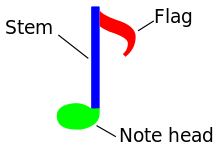

I am by no means a professional when it comes to typesetting music, but I have dabbled a bit with it using Lilypond (sometimes writing a Klingon song or two, sometimes doing choir music).
I’ve found that remembering all the conventions of music typesetting is hard, so here I’ve tried to collect some of the wisdoms I’ve encountered. – This stuff should be general enough to be used with any kind of score producing software.
Some good advice for typesetting music:
- CPDL – Help: The perfect edition
- Ten Tips towards Clearer Notation
- Repository of music-notation mistakes
- beam
- Beams are thick lines that are used connect consecutive notes (well,
eighths and shorter notes). They are used instead of the
note flag.
Notes for singing traditionally only use beams when a single syllable is held over more than one note (and even then the beam is broken at the main beats in the bar). But newer practices advocate using beams in vocal music in the same manner as other music. (See: Beaming of notes in Choral Music)
- crotchet
- Also called quarter or quarter note.
- flag
-  A little wavey thing at the end of the note stem, indicating that a note is an eighth or shorter. A flag may be replaced by a beam which connect the note to a neigboring note.
- grand staff
- Two (or more) staves joined by a brace, or intended to be played at once by a single performer (usually a keyboard instrument or the harp), make up a great stave (BrE) or grand staff (AmE). The upper staff usually have a treble clef and the lower staff has a bass clef (in this instance, middle C is centered between the two staves, and it can be written on the first ledger line below the upper staff or the first ledger line above the lower staff). When playing the piano or harp, the upper staff is normally played with the right hand and the lower staff with the left hand. When written for the organ, a grand staff comprises three staves, one for each hand on the manuals and one for the feet on the pedalboard.
- lyrics (låttext)
- (This is my guess, based on looking at lyrics in other peoples notes rather than something I’ve found concrete advice on.) Lyrics should be written with a full set of punctuation marks when written in musical scores (e.g. using a period at the end of each sentence). – Sometimes (in poetry and lyrics written without any musical score) periods and commas are left off (or implied by the line breaks), but since line breaks are wholly determined by the music these clues are not available in sheet music.
- minim
- Also called half note.
- quaver
- Also called eighth or eighth note.
- rest
- A brief pause in the music.
- semiquaver
- Also called sixteenth or sixteenth note. This note has two flags or beams.
- staff
- Five horizontal lines and four spaces that each represent a different musical pitch or different percussion instruments. Lines and spaces are numbered from bottom to top; bottom line is the first line and the top line is the fifth line.
- stem
- A vertical line connected to the note head of half notes, and all notes of shorter duration.
- upbeat
- Also called anacrusis. A partial unaccented measure that occurs
before the first whole measure of a piece. Traditionally, if there is an
upbeat, then the last measure of the same piece is shorter (so that the
entire piece contains a whole number of measures).
When more than one voice is used, only some of which have upbeats, then upbeats are written for all the voices (and filled with rests for those voices where the upbeat is not played).